介绍各种多线程设计模式。
Single Threaded Execution模式
定义
Single Threaded Execution 是指“以1个线程执行”的意思，有时也称为Critical Section（临界区）。
模式案例
案例：
假设有三个人，频繁地通过一扇门，规定每次只能通过一个人，当通过一个人时，程序会将通过的总人次加1，同时记录该次通过人的姓名和出生地。
门的定义：
public class Gate {
private int counter = 0;
private String name = "Nobody";
private String address = "Nowhere";
public void pass(String name, String address) {
this.counter++;
this.name = name;
this.address = address;
check();
}
private void check() {
if (name.charAt(0) != address.charAt(0)) {
System.out.println("***** BROKEN ***** " + toString());
}
}
public String toString() {
return "No." + counter + ": " + name + ", " + address;
}
}人的定义：
public class UserThread extends Thread {
private final Gate gate;
private final String myname;
private final String myaddress;
public UserThread(Gate gate, String myname, String myaddress) {
this.gate = gate;
this.myname = myname;
this.myaddress = myaddress;
}
public void run() {
System.out.println(myname + " BEGIN");
while (true) {
gate.pass(myname, myaddress);
}
}
}Main
public static void main(String[] args) {
System.out.println("Testing Gate, hit CTRL+C to exit.");
Gate gate = new Gate();
new UserThread(gate, "Alice", "Alaska").start();
new UserThread(gate, "Bobby", "Brazil").start();
new UserThread(gate, "Chris", "Canada").start();
}结果：
Testing Gate, hit CTRL+C to exit.
Alice BEGIN
Bobby BEGIN
Chris BEGIN
***** BROKEN ***** No.3: Chris, Alaska
***** BROKEN ***** No.3: Chris, Alaska
***** BROKEN ***** No.3: Chris, Alaska
***** BROKEN ***** No.6: Alice, Canada
***** BROKEN ***** No.6: Alice, Canada
***** BROKEN ***** No.6: Alice, Canada
***** BROKEN ***** No.9: Bobby, Brazil
***** BROKEN ***** No.10: Bobby, Alaska分析：
可以看到，上述Gate类并非线程安全的，因为pass方法会被多个线程同时调用，且该方法中会修改Gate类字段的值。
优化：
//将Gate类变为线程安全的类：
public class Gate {
private int counter = 0;
private String name = "Nobody";
private String address = "Nowhere";
public synchronized void pass(String name, String address) {
this.counter++;
this.name = name;
this.address = address;
check();
}
public synchronized String toString() {
return "No." + counter + ": " + name + ", " + address;
}
private void check() {
if (name.charAt(0) != address.charAt(0)) {
System.out.println("***** BROKEN ***** " + toString());
}
}
}模式讲解
角色：
Single Threaded Execution 模式的角色如下：
- SharedResource(共享资源)参与者
SharedResource就是多线线程会同时访问的资源类，该类通常具有2类方法：
①SafeMethod——从多个线程同时调用也不会发生问题的方法
②UnsafeMethod——从多个线程同时调用会发生问题，这类方法需要加以防护，指定只能由单线程访问区域，即临界区（critical section）。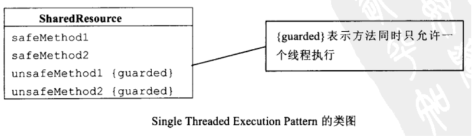
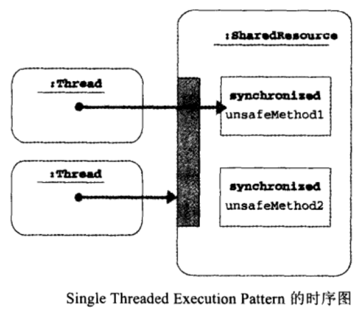
Immutable模式
定义
Immutable是“永恒的”“不会改变”的意思。在Immutable Patttern中，有着能够保证实例状态绝不会改变的类（immutable 类）。因为访问这个实例时，可以省去使用共享互斥机制所会浪费的时间，提高系统性能。java.lang.String就是一个Immutable的类。
模式案例
案例：
Person类，具有姓名（name）、地址（address）等字段。字段都是私有的，只能通过构造器来设置，且只有get方法，没有set方法。这时，即使有多个线程同时访问相同实例，Person类也是安全的，它的所有方法都不需要定义成synchronized。
Person定义：
public final class Person {
private final String name;
private final String address;
public Person(String name, String address) {
this.name = name;
this.address = address;
}
public String getName() {
return name;
}
public String getAddress() {
return address;
}
public String toString() {
return "[ Person: name = " + name + ", address = " + address + " ]";
}
}线程定义：
public class PrintPersonThread extends Thread {
private Person person;
public PrintPersonThread(Person person) {
this.person = person;
}
public void run() {
while (true) {
System.out.println(Thread.currentThread().getName() + " prints " + person);
}
}
}执行：
public class Main {
public static void main(String[] args) {
Person alice = new Person("Alice", "Alaska");
new PrintPersonThread(alice).start();
new PrintPersonThread(alice).start();
new PrintPersonThread(alice).start();
}
}模式讲解
Immutable模式的角色如下：
- Immutable(不变的)参与者
Immutable参与者是一个字段值无法更改的类，也没有任何用来更改字段值的方法。当Immutable参与者的实例建立后，状态就完全不再变化。
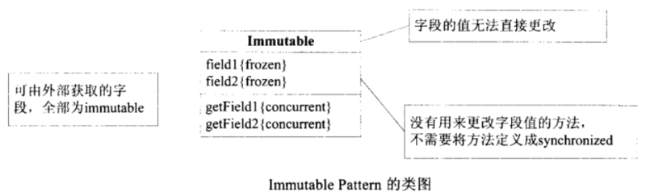
适用场景：
Immutable模式的优点在于，“不需要使用synchronized保护”。而“不需要使用synchronized保护”的最大优点就是可在不丧失安全性与生命性的前提下，提高程序的执行性能。若实例由多数线程所共享，且访问非常频繁，Immutable模式就能发挥极大的优点。
Guarded Suspension模式
定义
guarded是“被保护着的”、“被防卫着的”意思，suspension则是“暂停”的意思。当现在并不适合马上执行某个操作时，就要求想要执行该操作的线程等待，这就是Guarded Suspension Pattern。
Guarded Suspension Pattern 会要求线程等候，以保障实例的安全性，其它类似的称呼还有guarded wait、spin lock等。
模式案例
下面的案例是一种简单的消息处理模型，客户端线程发起请求，有请求队列缓存请求，然后发送给服务端线程进行处理。
Request类：
//request类表示请求
public class Request {
private final String name;
public Request(String name) {
this.name = name;
}
public String getName() {
return name;
}
public String toString() {
return "[ Request " + name + " ]";
}
}客户端线程类：
//客户端线程不断生成请求，插入请求队列
public class ClientThread extends Thread {
private Random random;
private RequestQueue requestQueue;
public ClientThread(RequestQueue requestQueue, String name, long seed) {
super(name);
this.requestQueue = requestQueue;
this.random = new Random(seed);
}
public void run() {
for (int i = 0; i < 10000; i++) {
Request request = new Request("No." + i);
System.out.println(Thread.currentThread().getName() + " requests " + request);
requestQueue.putRequest(request);
try {
Thread.sleep(random.nextInt(1000));
} catch (InterruptedException e) {
}
}
}
}服务端线程类：
//客户端线程不断从请求队列中获取请求，然后处理请求
public class ServerThread extends Thread {
private Random random;
private RequestQueue requestQueue;
public ServerThread(RequestQueue requestQueue, String name, long seed) {
super(name);
this.requestQueue = requestQueue;
this.random = new Random(seed);
}
public void run() {
for (int i = 0; i < 10000; i++) {
Request request = requestQueue.getRequest();
System.out.println(Thread.currentThread().getName() + " handles " + request);
try {
Thread.sleep(random.nextInt(1000));
} catch (InterruptedException e) {
}
}
}
}请求队列类：
public class RequestQueue {
private final LinkedList<Request> queue = new LinkedList<Request>();
public synchronized Request getRequest() {
while (queue.size() <= 0) {
try {
wait();
} catch (InterruptedException e) {
}
}
return (Request)queue.removeFirst();
}
public synchronized void putRequest(Request request) {
queue.addLast(request);
notifyAll();
}
}注：getRequest方法中有一个判断while (queue.size() <= 0)，该判断称为Guarded Suspension Pattern 的警戒条件（guard condition）。
执行：
public class Main {
public static void main(String[] args) {
RequestQueue requestQueue = new RequestQueue();
new ClientThread(requestQueue, "Alice", 3141592L).start();
new ServerThread(requestQueue, "Bobby", 6535897L).start();
}
}模式讲解
角色：
Guarded Suspension Pattern 的角色如下：
- GuardedObject (被防卫的对象)参与者
GuardedObject 参与者是一个拥有被防卫的方法（guardedMethod）的类。当线程执行guardedMethod时，只要满足警戒条件，就能继续执行，否则线程会进入wait set区等待。警戒条件是否成立随着GuardedObject的状态而变化。
GuardedObject 参与者除了guardedMethod外，可能还有用来更改实例状态的的方法stateChangingMethod。
在Java语言中，是使用while语句和wait方法来实现guardedMethod的；使用notify/notifyAll方法实现stateChangingMethod。如案例中的RequestQueue 类。
注意：Guarded Suspension Pattern 需要使用while，这样可以使从wait set被唤醒的线程在继续向下执行前检查Guard条件。如果改用if，当多个线程被唤醒时，由于wait是继续向下执行的，可能会出现问题。
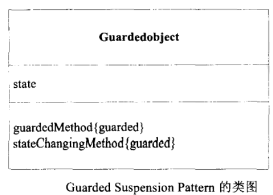
Balking模式
定义
Balking是“退缩不前”的意思。Balking Pattern和Guarded Suspension Pattern 一样需要警戒条件。在Balking Pattern中，当警戒条件不成立时，会马上中断，而Guarded Suspension Pattern 则是等待到可以执行时再去执行。
模式案例
该案例会保存数据的属性，之前所保存的属性都会被覆盖。如果当前数据的属性与上次保存的属性并无不同，就不执行保存。
Data定义：
public class Data {
private String filename; // 文件名
private String content; // 数据内容
private boolean changed; // 标识数据是否已修改
public Data(String filename, String content) {
this.filename = filename;
this.content = content;
this.changed = true;
}
// 修改数据
public synchronized void change(String newContent) {
content = newContent;
changed = true;
}
// 若数据有修改，则保存，否则直接返回
public synchronized void save() throws IOException {
if (!changed) {
System.out.println(Thread.currentThread().getName() + " balks");
return;
}
doSave();
changed = false;
}
private void doSave() throws IOException {
System.out.println(Thread.currentThread().getName() + " calls doSave, content = " + content);
Writer writer = new FileWriter(filename);
writer.write(content);
writer.close();
}
}修改线程定义：
//修改线程模仿“一边修改文章，一边保存”
public class ChangerThread extends Thread {
private Data data;
private Random random = new Random();
public ChangerThread(String name, Data data) {
super(name);
this.data = data;
}
public void run() {
try {
for (int i = 0; true; i++) {
data.change("No." + i);
Thread.sleep(random.nextInt(1000));
data.save();
}
} catch (IOException e) {
e.printStackTrace();
} catch (InterruptedException e) {
e.printStackTrace();
}
}
}存储线程定义：
//存储线程每个1s，会对数据进行一次保存，就像文本处理软件的“自动保存”一样。
public class SaverThread extends Thread {
private Data data;
public SaverThread(String name, Data data) {
super(name);
this.data = data;
}
public void run() {
try {
while (true) {
data.save(); // 存储资料
Thread.sleep(1000); // 休息约1秒
}
} catch (IOException e) {
e.printStackTrace();
} catch (InterruptedException e) {
e.printStackTrace();
}
}
}执行：
public class Main {
public static void main(String[] args) {
Data data = new Data("data.txt", "(empty)");
new ChangerThread("ChangerThread", data).start();
new SaverThread("SaverThread", data).start();
}
}模式讲解
Balking 模式的角色如下：
- GuardedObject(被警戒的对象)参与者
GuardedObject参与者是一个拥有被警戒的方法(guardedMethod)的类。当线程执行guardedMethod时，只有满足警戒条件时，才会继续执行，否则会立即返回。警戒条件的成立与否，会随着GuardedObject参与者的状态而变化。
注：上述示例中，Data类就是GuardedObject(被警戒的对象)参与者，save方法是guardedMethod，change方法是stateChangingMethod。
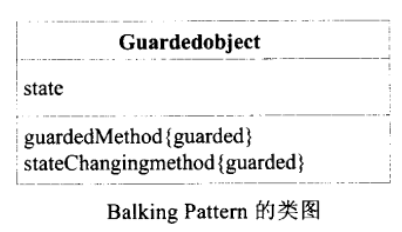
Producer-Consumer模式
定义
Producer-Consumer Pattern就是生产者-消费者模式。
生产者和消费者在为不同的处理线程，生产者必须将数据安全地交给消费者，消费者进行消费时，如果生产者还没有建立数据，则消费者需要等待。
一般来说，可能存在多个生产者和消费者，不过也有可能生产者和消费者都只有一个，当双方都只有一个时，我们也称之为Pipe Pattern。
模式案例
该案例中，定义了3个角色：厨师、客人、桌子。
厨师（生产者）定义：
public class MakerThread extends Thread {
private final Random random;
private final Table table;
private static int id = 0; //蛋糕的流水号(所有厨师共通)
public MakerThread(String name, Table table, long seed) {
super(name);
this.table = table;
this.random = new Random(seed);
}
public void run() {
try {
while (true) {
Thread.sleep(random.nextInt(1000));
String cake = "[ Cake No." + nextId() + " by " + getName() + " ]";
table.put(cake);
}
} catch (InterruptedException e) {
}
}
private static synchronized int nextId() {
return id++;
}
}客人（消费者）定义：
public class EaterThread extends Thread {
private final Random random;
private final Table table;
public EaterThread(String name, Table table, long seed) {
super(name);
this.table = table;
this.random = new Random(seed);
}
public void run() {
try {
while (true) {
String cake = table.take();
Thread.sleep(random.nextInt(1000));
}
} catch (InterruptedException e) {
}
}
}桌子（队列）定义：
public class Table {
private final String[] buffer;
private int tail;
private int head;
private int count;
public Table(int count) {
this.buffer = new String[count];
this.head = 0;
this.tail = 0;
this.count = 0;
}
public synchronized void put(String cake) throws InterruptedException {
System.out.println(Thread.currentThread().getName() + " puts " + cake);
while (count >= buffer.length) {
wait();
}
buffer[tail] = cake;
tail = (tail + 1) % buffer.length;
count++;
notifyAll();
}
public synchronized String take() throws InterruptedException {
while (count <= 0) {
wait();
}
String cake = buffer[head];
head = (head + 1) % buffer.length;
count--;
notifyAll();
System.out.println(Thread.currentThread().getName() + " takes " + cake);
return cake;
}
}执行：
public class Main {
public static void main(String[] args) {
Table table = new Table(3);
new MakerThread("MakerThread-1", table, 31415).start();
new MakerThread("MakerThread-2", table, 92653).start();
new MakerThread("MakerThread-3", table, 58979).start();
new EaterThread("EaterThread-1", table, 32384).start();
new EaterThread("EaterThread-2", table, 62643).start();
new EaterThread("EaterThread-3", table, 38327).start();
}
}模式讲解
Producer-Consumer模式的角色如下：
Data(数据)参与者
- Data代表了实际生产或消费的数据。
Producer(生产者)参与者
- Producer会创建Data，然后传递给Channel参与者。
Consumer(消费者)参与者
- Consumer从Channel参与者获取Data数据，进行处理。
Channel(通道)参与者
- Channel从Producer参与者处接受Data参与者，并保管起来，并应Consumer参与者的要求，将Data参与者传送出去。为确保安全性，Producer参与者与Consumer参与者要对访问共享互斥。
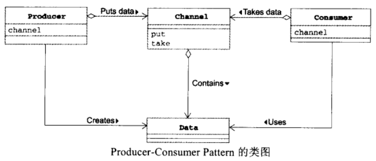
Read-Write Lock模式
定义
Read-Write Lock Pattern将读取与写入分开处理，在读取数据之前必须获取用来读取的锁定，而写入的时候必须获取用来写入的锁定。因为读取时实例的状态不会改变，所以多个线程可以同时读取；但是，写入会改变实例的状态，所以当有一个线程写入的时候，其它线程既不能读取与不能写入。
模式案例
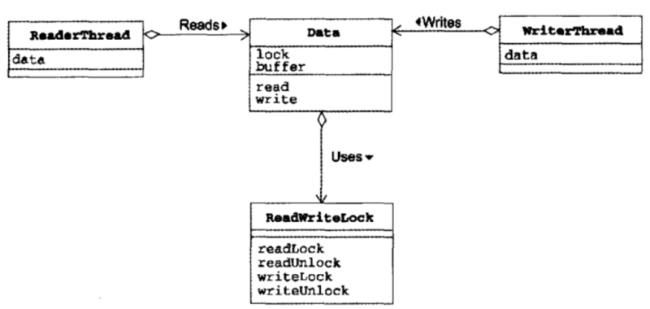
Data类：
数据类可以被多个线程同时访问。
public class Data {
private final char[] buffer;
private final ReadWriteLock lock = new ReadWriteLock();
public Data(int size) {
this.buffer = new char[size];
for (int i = 0; i < buffer.length; i++) {
buffer[i] = '*';
}
}
public char[] read() throws InterruptedException {
lock.readLock();
try {
return doRead();
} finally {
lock.readUnlock();
}
}
public void write(char c) throws InterruptedException {
lock.writeLock();
try {
doWrite(c);
} finally {
lock.writeUnlock();
}
}
private char[] doRead() {
char[] newbuf = new char[buffer.length];
for (int i = 0; i < buffer.length; i++) {
newbuf[i] = buffer[i];
}
slowly();
return newbuf;
}
private void doWrite(char c) {
for (int i = 0; i < buffer.length; i++) {
buffer[i] = c;
slowly();
}
}
private void slowly() {
try {
Thread.sleep(50);
} catch (InterruptedException e) {
}
}
}WriterThread类：
public class WriterThread extends Thread {
private static final Random random = new Random();
private final Data data;
private final String filler;
private int index = 0;
public WriterThread(Data data, String filler) {
this.data = data;
this.filler = filler;
}
public void run() {
try {
while (true) {
char c = nextchar();
data.write(c);
Thread.sleep(random.nextInt(3000));
}
} catch (InterruptedException e) {
}
}
private char nextchar() {
char c = filler.charAt(index);
index++;
if (index >= filler.length()) {
index = 0;
}
return c;
}
}ReaderThread类：
public class ReaderThread extends Thread {
private final Data data;
public ReaderThread(Data data) {
this.data = data;
}
public void run() {
try {
while (true) {
char[] readbuf = data.read();
System.out.println(Thread.currentThread().getName() + " reads " + String.valueOf(readbuf));
}
} catch (InterruptedException e) {
}
}
}ReadWriteLock类：
读写锁需要防止以下两类冲突：
- “读取”和“写入”的冲突（read-write conflict）
- “写入”和“写入”的冲突（write-write conflict）
- 注意：“读取”和“读取”之间不会冲突*
public final class ReadWriteLock {
private int readingReaders = 0; //正在读取线程的数量
private int writingWriters = 0; //正在写入线程的数量
public synchronized void readLock() throws InterruptedException {
while (writingWriters > 0 ) {
wait();
}
readingReaders++;
}
public synchronized void readUnlock() {
readingReaders--;
notifyAll();
}
public synchronized void writeLock() throws InterruptedException {
while (readingReaders > 0 || writingWriters > 0) {
wait();
}
writingWriters++;
}
public synchronized void writeUnlock() {
writingWriters--;
notifyAll();
}
}执行：
public class Main {
public static void main(String[] args) {
Data data = new Data(10);
new ReaderThread(data).start();
new ReaderThread(data).start();
new ReaderThread(data).start();
new ReaderThread(data).start();
new ReaderThread(data).start();
new ReaderThread(data).start();
new WriterThread(data, "ABCDEFGHIJKLMNOPQRSTUVWXYZ").start();
new WriterThread(data, "abcdefghijklmnopqrstuvwxyz").start();
}
}模式讲解
Read-Write Lock模式的角色如下：
Reader(读取者)参与者
- Reader参与者会对SharedResource进行读。
Writer(写入者)参与者
- Writer参与者会对SharedResource进行写。
SharedResource(共享资源)参与者
- SharedResource代表Reader和Writer所共享的资源对象，SharedResource提供不改变内部状态的read操作，以及会改变内部状态的write操作。
ReadWriteLock(读写锁)参与者
- ReadWriteLock提供了对SharedResource参与者进行read操作和write操作时需要的锁定。
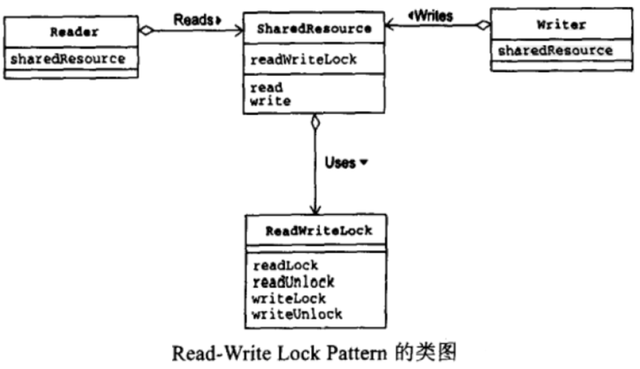
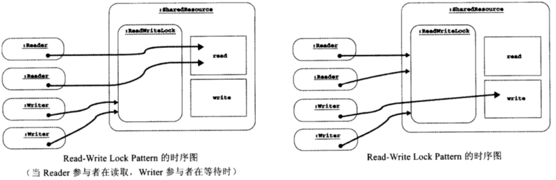
Thread-Per-Message模式
定义
Thread-Per-Message模式是指每个message一个线程，message可以理解成“消息”、“命令”或者“请求”。每一个message都会分配一个线程，由这个线程执行工作，使用Thread-Per-Message Pattern时，“委托消息的一端”与“执行消息的一端”回会是不同的线程。
模式案例
该案例中，由Host分发请求，每一个请求分发一个新的线程进行处理。
Host类定义：
public class Host {
private final Helper helper = new Helper();
public void request(final int count, final char c) {
System.out.println(" request(" + count + ", " + c + ") BEGIN");
new Thread() {
public void run() {
helper.handle(count, c);
}
}.start();
System.out.println(" request(" + count + ", " + c + ") END");
}
}Helper类定义：
public class Helper {
public void handle(int count, char c) {
System.out.println(" handle(" + count + ", " + c + ") BEGIN");
for (int i = 0; i < count; i++) {
slowly();
System.out.print(c);
}
System.out.println("");
System.out.println(" handle(" + count + ", " + c + ") END");
}
private void slowly() {
try {
Thread.sleep(100);
} catch (InterruptedException e) {
}
}
}执行：
public class Main {
public static void main(String[] args) {
System.out.println("main BEGIN");
Host host = new Host();
host.request(10, 'A');
host.request(20, 'B');
host.request(30, 'C');
System.out.println("main END");
}
}模式讲解
Thread-Per-Message模式的角色如下：
Client(委托人)参与者
- Client参与者会对Host参与者送出请求(Request)。上述案例中，Client参与者就是Main类。
Host参与者
- Host参与者接受来自Client的请求，然后建立新的线程处理它。
Helper(帮助者)参与者
- Helper实际处理请求的。
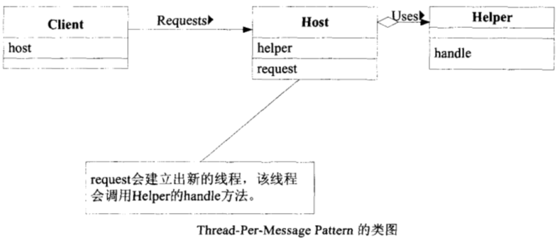
Work Thread模式
定义
Work Thread模式和Thread-Per-Message模式类似，Thread-Per-Message每次都创建一个新的线程处理请求，而Work Thread模式预先会创建一个线程池（Thread Pool），每次从线程池中取出线程处理请求。
模式案例
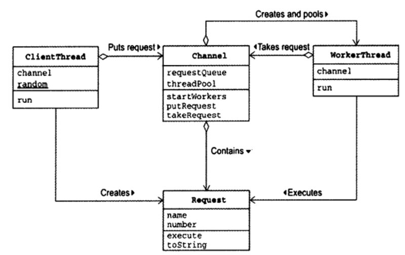
Request请求类：
public class Request {
private final String name;
private final int number;
private static final Random random = new Random();
public Request(String name, int number) {
this.name = name;
this.number = number;
}
public void execute() {
System.out.println(Thread.currentThread().getName() + " executes " + this);
try {
Thread.sleep(random.nextInt(1000));
} catch (InterruptedException e) {
}
}
public String toString() {
return "[ Request from " + name + " No." + number + " ]";
}
}Client线程类：
Client线程类用来送出请求：
- 创建Request实例
- 将这个实例传送给Channel类的putRequest方法
public class ClientThread extends Thread {
private final Channel channel;
private static final Random random = new Random();
public ClientThread(String name, Channel channel) {
super(name);
this.channel = channel;
}
public void run() {
try {
for (int i = 0; true; i++) {
Request request = new Request(getName(), i);
channel.putRequest(request);
Thread.sleep(random.nextInt(1000));
}
} catch (InterruptedException e) {
}
}
}Worker线程类：
WorkerThread类表示工人线程，工人线程可以执行以下动作：
- 从Channel实例取出Request实例
- 调用Request实例的execute方法
public class WorkerThread extends Thread {
private final Channel channel;
public WorkerThread(String name, Channel channel) {
super(name);
this.channel = channel;
}
public void run() {
while (true) {
Request request = channel.takeRequest();
request.execute();
}
}
}Channel类：
/**
*Channel类可用来接受、传送工作请求，并保存工人线程。
*/
public class Channel {
private static final int MAX_REQUEST = 100; // 最大请求数
private final Request[] requestQueue; // 请求队列
private int tail;
private int head;
private int count;
private final WorkerThread[] threadPool;
public Channel(int threads) {
this.requestQueue = new Request[MAX_REQUEST];
this.head = 0;
this.tail = 0;
this.count = 0;
threadPool = new WorkerThread[threads];
for (int i = 0; i < threadPool.length; i++) {
threadPool[i] = new WorkerThread("Worker-" + i, this);
}
}
public void startWorkers() {
for (int i = 0; i < threadPool.length; i++) {
threadPool[i].start();
}
}
public synchronized void putRequest(Request request) {
while (count >= requestQueue.length) {
try {
wait();
} catch (InterruptedException e) {
}
}
requestQueue[tail] = request;
tail = (tail + 1) % requestQueue.length;
count++;
notifyAll();
}
public synchronized Request takeRequest() {
while (count <= 0) {
try {
wait();
} catch (InterruptedException e) {
}
}
Request request = requestQueue[head];
head = (head + 1) % requestQueue.length;
count--;
notifyAll();
return request;
}
}执行：
public class Main {
public static void main(String[] args) {
Channel channel = new Channel(5);
channel.startWorkers();
new ClientThread("Alice", channel).start();
new ClientThread("Bobby", channel).start();
new ClientThread("Chris", channel).start();
}
}模式讲解
Work Thread模式的角色如下：
Client（委托人）参与者
- Client参与者会创建请求(Request)，然后传送给Channel参与者。
Channel（通道）参与者
- Channel参与者保存Request请求队列，同时会预创建Worker线程。
Worker（工人）参与者
- Worker参与者会从Channel获取Request。
Request（请求）参与者
- Worker参与者会从Channel获取Request。
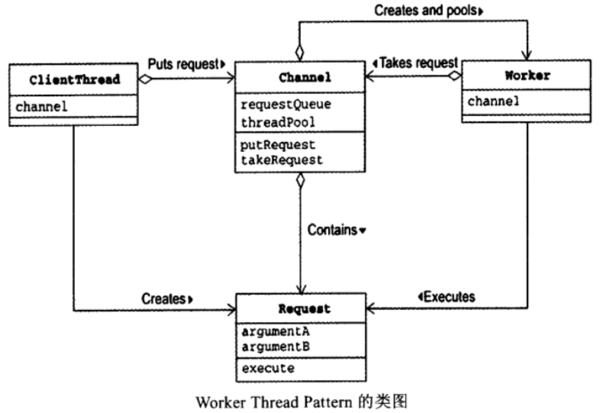
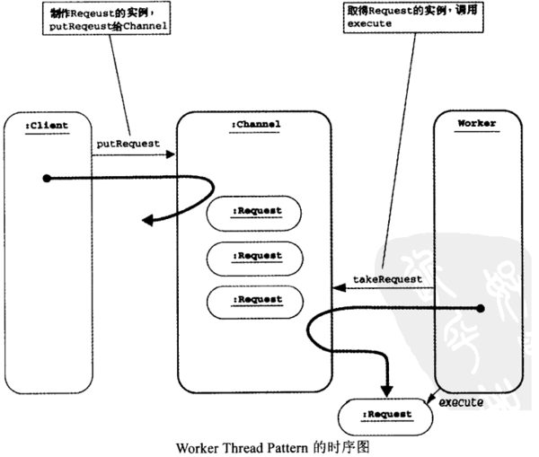
注：启动线程是一项繁重的工作，Worker Thread模式预先创建一批线程，可以重复使用线程，达到资源再利用、提升性能的目的。
Future模式
定义
Future模式用来获取线程的执行结果。在Thread-Per-Message模式中，如果调用一个线程异步执行任务，没有办法获取到返回值，就像：host.request(10,'A');
而Future模式送出请求后，马上就要获取返回值，就像：Data data=host.request(10,'A');
但是上述的返回值并不是程序的执行结果，因为线程是异步的，主线程调用该该方法时，异步线程可能才刚刚启动。需要一段时间后像下面这样获取执行结果：data.getContent();
模式案例

Data接口/实现：
public interface Data {
public abstract String getContent();
}
public class RealData implements Data {
private final String content;
public RealData(int count, char c) {
System.out.println(" making RealData(" + count + ", " + c + ") BEGIN");
char[] buffer = new char[count];
for (int i = 0; i < count; i++) {
buffer[i] = c;
try {
Thread.sleep(100);
} catch (InterruptedException e) {
}
}
System.out.println(" making RealData(" + count + ", " + c + ") END");
this.content = new String(buffer);
}
public String getContent() {
return content;
}
}
public class FutureData implements Data {
private RealData realdata = null;
private boolean ready = false;
public synchronized void setRealData(RealData realdata) {
if (ready) {
return;
}
this.realdata = realdata;
this.ready = true;
notifyAll();
}
public synchronized String getContent() {
while (!ready) {
try {
wait();
} catch (InterruptedException e) {
}
}
return realdata.getContent();
}
}Host类：
public class Host {
public Data request(final int count, final char c) {
System.out.println(" request(" + count + ", " + c + ") BEGIN");
final FutureData future = new FutureData();
new Thread() {
public void run() {
RealData realdata = new RealData(count, c);
future.setRealData(realdata);
}
}.start();
System.out.println(" request(" + count + ", " + c + ") END");
return future;
}
}执行：
public class Main {
public static void main(String[] args) {
System.out.println("main BEGIN");
Host host = new Host();
Data data1 = host.request(10, 'A');
Data data2 = host.request(20, 'B');
Data data3 = host.request(30, 'C');
System.out.println("main otherJob BEGIN");
try {
Thread.sleep(2000);
} catch (InterruptedException e) {
}
System.out.println("main otherJob END");
System.out.println("data1 = " + data1.getContent());
System.out.println("data2 = " + data2.getContent());
System.out.println("data3 = " + data3.getContent());
System.out.println("main END");
}
}模式讲解
Future模式的角色如下：
Client（委托人）参与者
- Client参与者会向Host参与者送出请求（request），Client参与者会马上得到VirtualData，作为请求结果的返回值。（案例中的Main类就是Client）
Host参与者
- Host参与者接受请求（request），然后创建线程进行异步处理。Host参与者会立即返回Future（以VirturalData的形式）。
VirtualData（虚拟数据）参与者
- VirtualData是用来统一代表Future参与者与RealData参与者。（案例中Data接口就是VirtualData参与者）
RealData（实际数据）参与者
- RealData表示实际的数据。
Future参与者
- Future参与者包含获取实际的数据和设置实际数据的方法。Host类会创建该对象，当异步线程处理完成时，会调用Future的设置数据的方法。
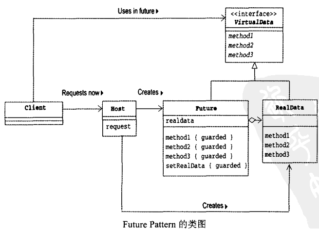
Two-phase-Termination模式
定义
我们将线程的正常处理状态称为“作业中”，当希望结束这个线程时，则送出“终止请求”。接着，这个线程并不会立刻结束，而是进入“终止处理中”状态，此时线程还是运行着的，可能处理一些释放资源等操作。直到终止处理完毕，才会真正结束。
Two-phase Termination主要考虑以下问题：
- 安全地结束（安全性）；
- 一定会进行终止处理（生命性）；
- 收到“终止请求”后，要尽快进行终止处理（响应性）；
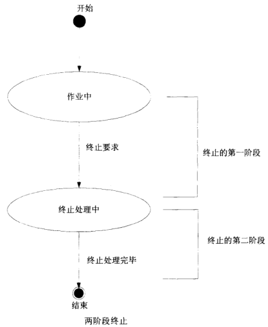
模式案例
该案例中，线程每隔500ms将计数器增加1，在大约10s后结束。
计数线程类：
public class CountupThread extends Thread {
private long counter = 0;
private volatile boolean shutdownRequested = false;
public void shutdownRequest() {
shutdownRequested = true;
interrupt();
}
public boolean isShutdownRequested() {
return shutdownRequested;
}
public final void run() {
try {
while (!shutdownRequested) {
doWork();
}
} catch (InterruptedException e) {
} finally {
doShutdown();
}
}
private void doWork() throws InterruptedException {
counter++;
System.out.println("doWork: counter = " + counter);
Thread.sleep(500);
}
private void doShutdown() {
System.out.println("doShutdown: counter = " + counter);
}
}执行：
public class Main {
public static void main(String[] args) {
System.out.println("main: BEGIN");
try {
CountupThread t = new CountupThread();
t.start();
Thread.sleep(10000);
System.out.println("main: shutdownRequest");
t.shutdownRequest();
System.out.println("main: join");
t.join();
} catch (InterruptedException e) {
e.printStackTrace();
}
System.out.println("main: END");
}
}模式讲解
Two-phase Termination模式的角色如下：
TerminationRequester参与者
- TerminationRequester参与者用于调用终止请求。（案例中的Main类）
Terminator参与者
- Terminator参与者接受终止请求，进行实际的终止处理，提供shutdownRequest终止方法供外界调用。
Terminator参与者拥有一个标识（门闩）表示是否已经收到终止请求
- Terminator参与者接受终止请求，进行实际的终止处理，提供shutdownRequest终止方法供外界调用。
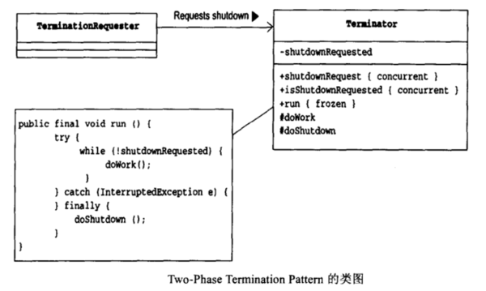
Thread-Specific Strage(ThreadLocal)模式
定义
Thread-Specific Storage就是“线程独有的存储库”，该模式会对每个线程提供独有的内存空间。java.lang.ThreadLocal类提供了该模式的实现，ThreadLocal的实例是一种集合（collection）架构，该实例管理了很多对象，可以想象成一个保管有大量保险箱的房间。
java.lang.ThreadLocal类的方法：
- public void set()
该方法会检查当前调用线程，默认以该线程的Thread.currentThread()值作为键，来保存指定的值。
- public Object get()
该方法会检查当前调用线程，默认以该线程的Thread.currentThread()值作为键，获取保存指定的值。
模式案例
TSLog类：
//实际执行记录日志的类，每个线程都会拥有一个该类的实例
public class TSLog {
private PrintWriter writer = null;
public TSLog(String filename) {
try {
writer = new PrintWriter(new FileWriter(filename));
} catch (IOException e) {
e.printStackTrace();
}
}
public void println(String s) {
writer.println(s);
}
public void close() {
writer.println("==== End of log ====");
writer.close();
}
}Log类：
public class Log {
private static final ThreadLocal<TSLog> tsLogCollection = new ThreadLocal<TSLog>();
public static void println(String s) {
getTSLog().println(s);
}
public static void close() {
getTSLog().close();
}
private static TSLog getTSLog() {
TSLog tsLog = (TSLog) tsLogCollection.get();
if (tsLog == null) {
tsLog = new TSLog(Thread.currentThread().getName() + "-log.txt");
tsLogCollection.set(tsLog);
}
return tsLog;
}
}ClientThread类：
public class ClientThread extends Thread {
public ClientThread(String name) {
super(name);
}
public void run() {
System.out.println(getName() + " BEGIN");
for (int i = 0; i < 10; i++) {
Log.println("i = " + i);
try {
Thread.sleep(100);
} catch (InterruptedException e) {
}
}
Log.close();
System.out.println(getName() + " END");
}
}执行：
Alice、Bobby、Chris三个线程调用Log类的同一个方法，但实际上每个线程都拥有独自的TSLog实例。
public class Main {
public static void main(String[] args) {
new ClientThread("Alice").start();
new ClientThread("Bobby").start();
new ClientThread("Chris").start();
}
}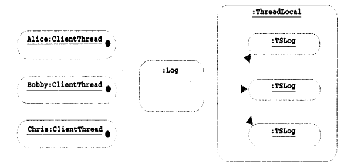
模式讲解
Thread-Specific Storage模式的角色如下：
Client（委托人）参与者
- Client参与者会将工作委托给TSObjectProxy参与者。（案例中的ClientThread类就是Client）
TSObjectProxy（线程独有对象的代理者）参与者
- TSObjectProxy参与者会处理多个Client委托的工作。（案例中的Log类就是TSObjectProxy）
TSObjectCollection（线程独有对象的集合）参与者
- （案例中的
java.lang.ThreadLocal类就是TSObjectCollection）
- （案例中的
TSObject（线程独有的对象）参与者
- TSObject存放线程所特有的信息，TSObject实例的方法只会由单线程调用，由TSObjectCollection管理，每个线程都拥有独立的TSObject实例。（案例中的TSLog类就是TSObject）
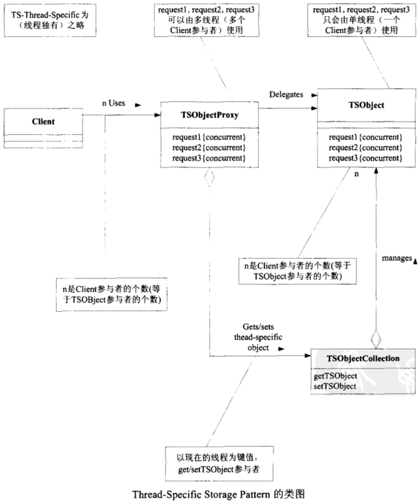
ThreadLocal的原理
JDK中有一个类就实现了Thread-Specific Storage模式，即ThreadLocal，ThreadLocal类主要有四个方法：
1、初始化返回值的方法：
该方法实现只返回 null，并且修饰符为protected，很明显，如果用户想返回初始值不为null，则需要重写该方法；
protected T initialValue() {
return null;
}2、get方法，获取线程本地副本变量
public T get() {
Thread t = Thread.currentThread();
ThreadLocalMap map = getMap(t);
if (map != null) {
ThreadLocalMap.Entry e = map.getEntry(this);
if (e != null) {
T result = (T)e.value;
return result;
}
}
return setInitialValue();
}3、set方法，设置线程本地副本变量
public void set(T value) {
Thread t = Thread.currentThread();
ThreadLocalMap map = getMap(t);
if (map != null)
map.set(this, value);
else
createMap(t, value);
}4、remove方法，移除线程本地副本变量
public void remove() {
ThreadLocalMap m = getMap(Thread.currentThread());
if (m != null)
m.remove(this);
}实现原理
如果需要我们自己来设计ThreadLocal对象，那么，一般的实现思路：设计一个线程安全的Map，key就是当前线程对象，Value就是线程本地变量的值。
然而，JDK的实现思路：
让每个Thread对象，自身持有一个Map，这个Map的Key就是当前ThreadLocal对象，Value是本地线程变量值。相对于加锁的实现方式，这样做可以提升性能，其实是一种以时间换空间的思路。
ThreadLocal的内部结构示意图
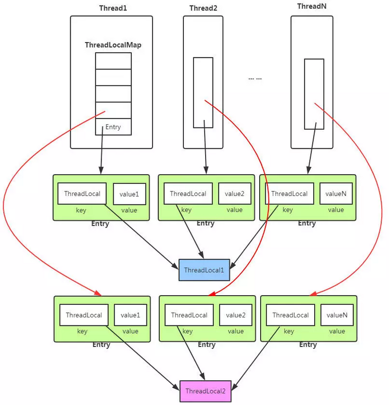
ThreadLocal类有个getMap()方法，其实就是返回Thread对象自身的Map——threadLocals。
ThreadLocalMap getMap(Thread t) {
return t.threadLocals;
}threadLocals是一种ThreadLocal.ThreadLocalMap类型的数据结构，作为内部类定义在ThreadLocal类中，其内部采用一种WeakReference的方式保存键值对。
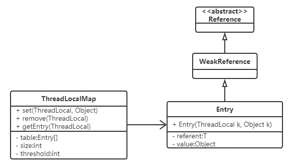
Entry继承了WeakReference：
static class Entry extends WeakReference<ThreadLocal<?>> {
/** The value associated with this ThreadLocal. */
Object value;
Entry(ThreadLocal<?> k, Object v) {
super(k);
value = v;
}
}使用注意
Hash冲突
ThreadLocalMap中解决Hash冲突采用线性探测的方式。所谓线性探测：
就是根据初始key的hashcode值确定元素在table数组中的位置，如果发现这个位置上已经有其他key值的元素被占用，则利用固定的算法寻找一定步长的下个位置，依次判断，直至找到能够存放的位置。
ThreadLocalMap采用线性探测的方式解决Hash冲突的效率很低（简单地步长+1），所以如果有大量不同的ThreadLocal对象放入map中时发送冲突，则效率很低。
使用建议
每个线程只存一个变量，这样的话所有的线程存放到map中的Key都是相同的ThreadLocal，如果一个线程要保存多个变量，就需要创建多个ThreadLocal，多个ThreadLocal放入Map中时会极大的增加Hash冲突的可能。
内存泄漏
ThreadLocal在ThreadLocalMap中是以一个弱引用类型被Entry中的Key引用的，因此如果ThreadLocal没有外部强引用来引用它，那么ThreadLocal会在下次JVM垃圾收集时被回收。
这个时候就会出现Entry中Key已经被回收，出现一个null Key的情况，外部读取ThreadLocalMap中的元素是无法通过null Key来找到Value的。
因此如果当前线程的生命周期很长，一直存在，那么其内部的ThreadLocalMap对象也一直生存下来，这些null key就存在一条强引用链的关系一直存在：Thread –> ThreadLocalMap–>Entry–>Value，这条强引用链会导致Entry不会回收，Value也不会回收，但Entry中的Key却已经被回收的情况，造成内存泄漏。
static class Entry extends WeakReference<ThreadLocal<?>> {
/** The value associated with this ThreadLocal. */
Object value;
Entry(ThreadLocal<?> k, Object v) {
super(k);
value = v;
}
}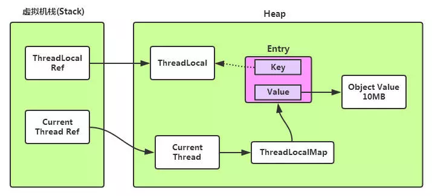
但JVM团队已经考虑到这样的情况，并做了一些措施来保证ThreadLocal尽量不会内存泄漏：
在ThreadLocal的get()、set()、remove()方法调用的时候会清除掉线程的ThreadLocalMap中所有Entry中Key为null的Value，并将整个Entry设置为null，利于下次内存回收。
最好的解决方案：
每次使用完ThreadLocal，都调用它的remove()方法，清除数据。